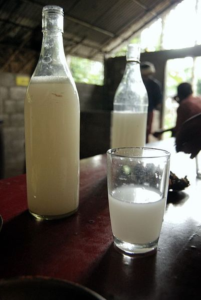
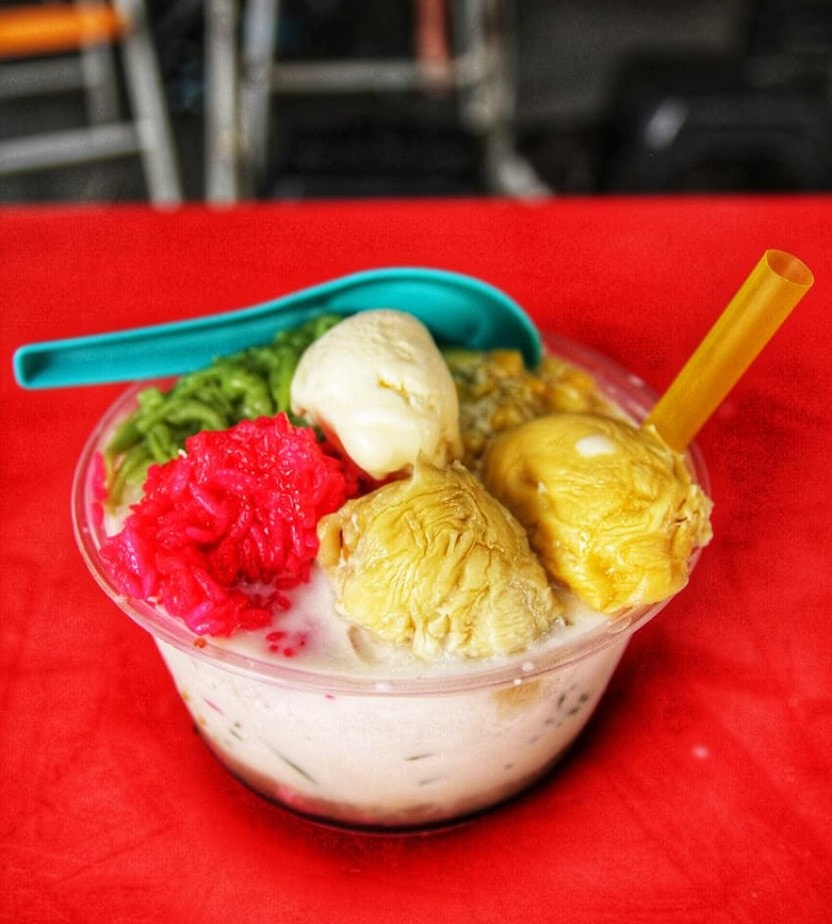
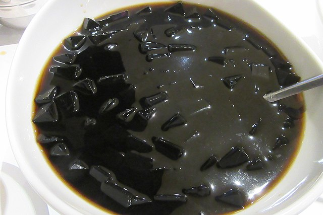
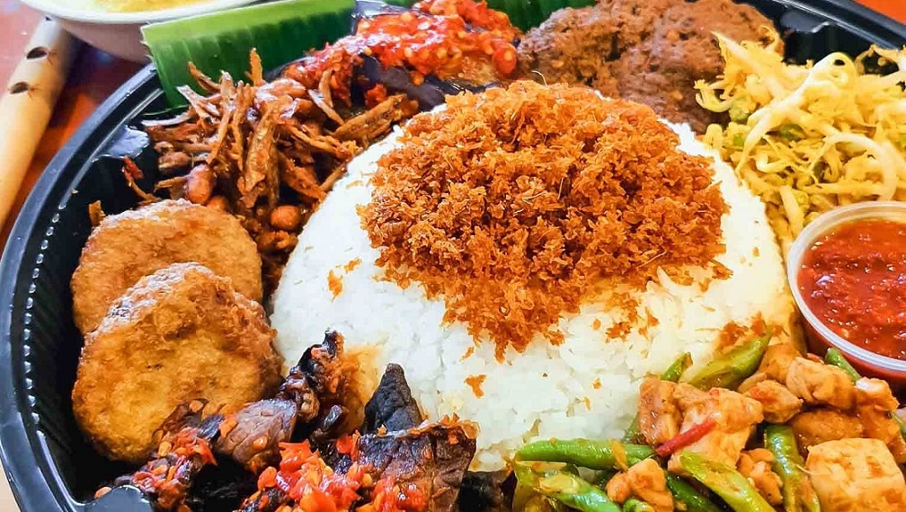
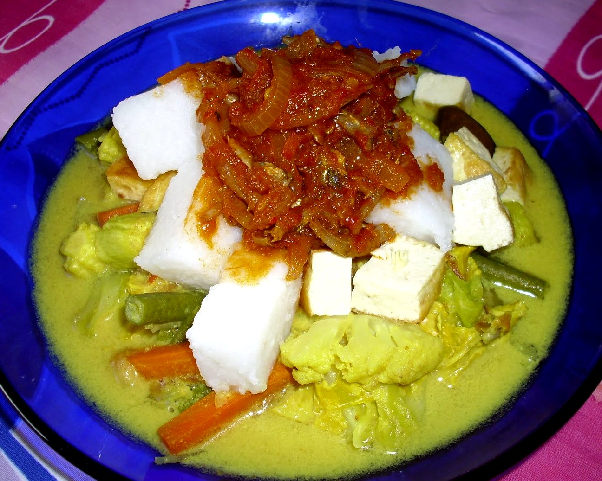
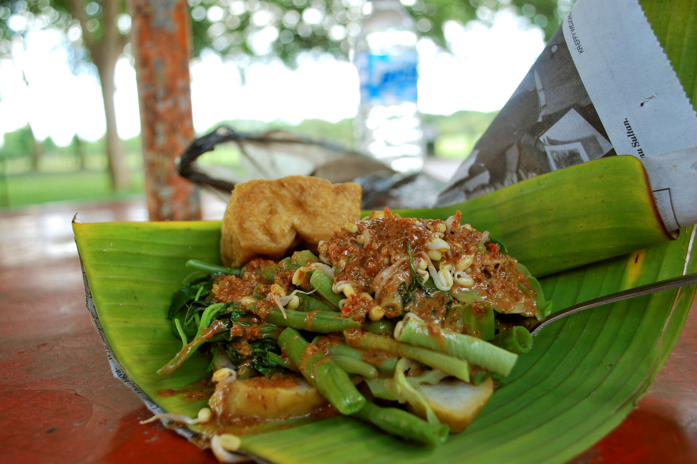
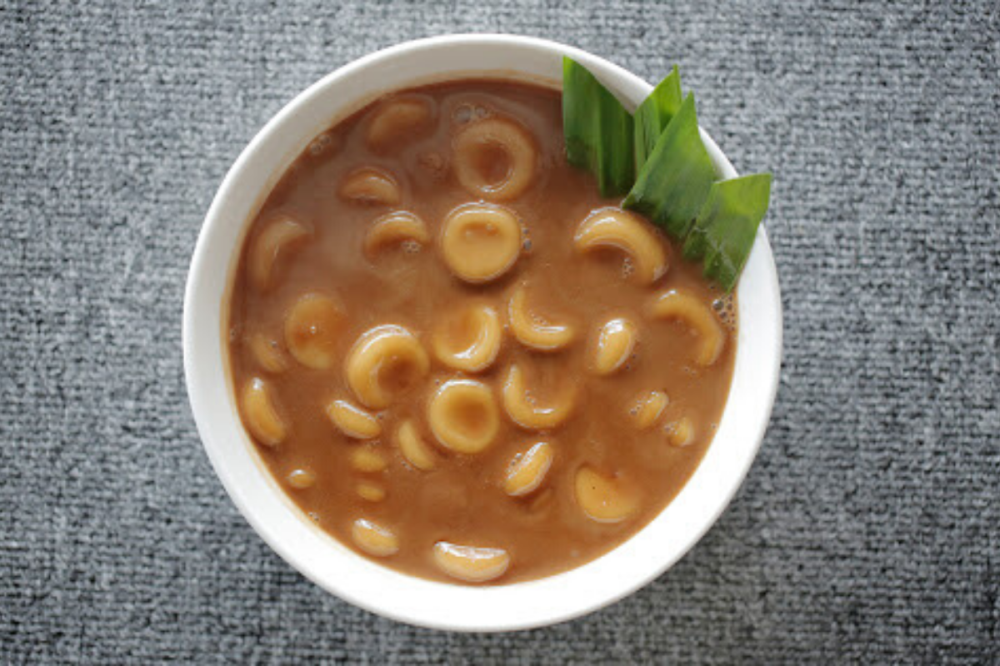

Tuak is a Sarawakian term for rice wine. In Sabah, it is called lihing.
Rice wine is produced in all rice production countries such as Japan (sake),
Korea (makgeolli), Thailand (Sato), China (mi jiu) and Philippines (tapuy). Rice wine from different countries

Cendol is a layered ice dessert that is served on shaved ice, with worm-like green rice flour jelly, palm sugar syrup, and coconut milk on top. This dessert is commonly found in Southeast Asia countries, namely Malaysia, Singapore, Indonesia, Vietnam, and Thailand.

It is created by using Chinese mesona and has a mild, slightly bitter taste. It is served chilled, with other toppings such as fruit, or in bubble tea or other drinks.

Nasi ambeng or Nasi ambang is an Indonesian fragrant rice dish that consists of - but is not limited to - steamed white rice, chicken curry or chicken stewed in soy sauce, beef or chicken rendang, sambal goreng urap, bergedel, and serunding

Kuih bahulu is a traditional cake or snack usually baked in brass moulds which usually come in all sorts of sizes and shapes like fishes, flowers and most commonly, sea shells as those shown in this video above. As the main ingredient is egg, kuih bahulu is sometimes known as egg sponge cake.

commonly found in Indonesia, Malaysia and Singapore. Rice is rolled inside a banana leaf and boiled, then cut into small cakes as a staple food replacement of steamed rice

Pecal is a common appetiser that can be found just about anywhere in Selangor. Known to be a traditional Javanese salad that merely consists of vegetables topped with a mouth-watering peanut sauce that can also be served with Ketupat or Lontong.

There is various types of satay including chicken, beef, lamb, and fish, all grilled to perfection

Back in the day, it has been traditionally practised by the Banjar community to plate up Wadai Kipeng on their Thanksgiving ceremony!